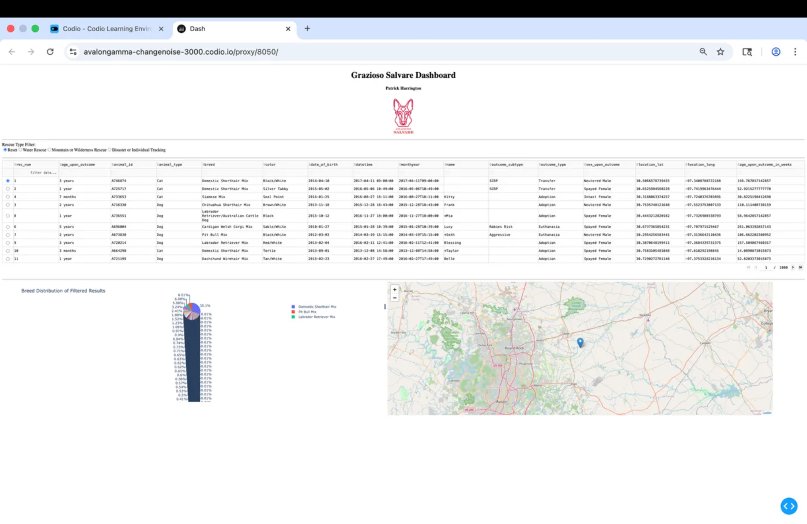
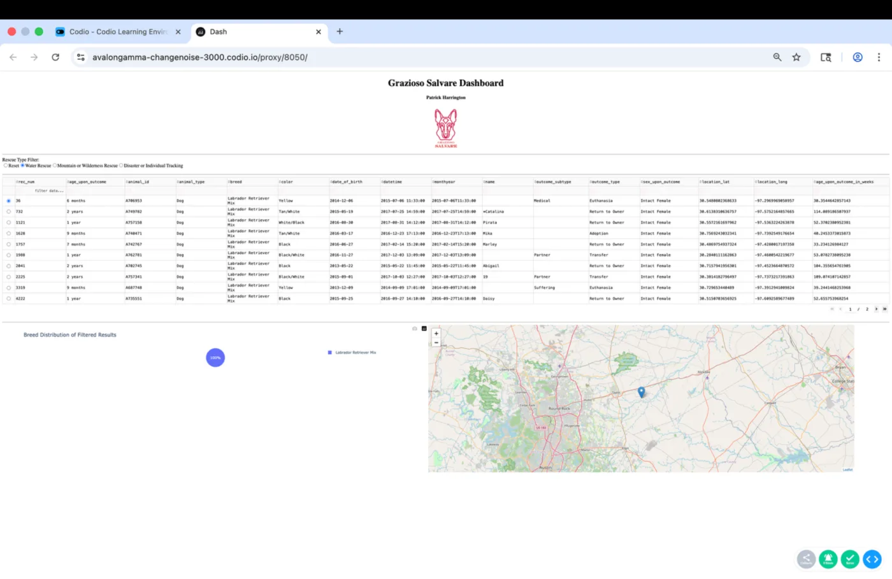
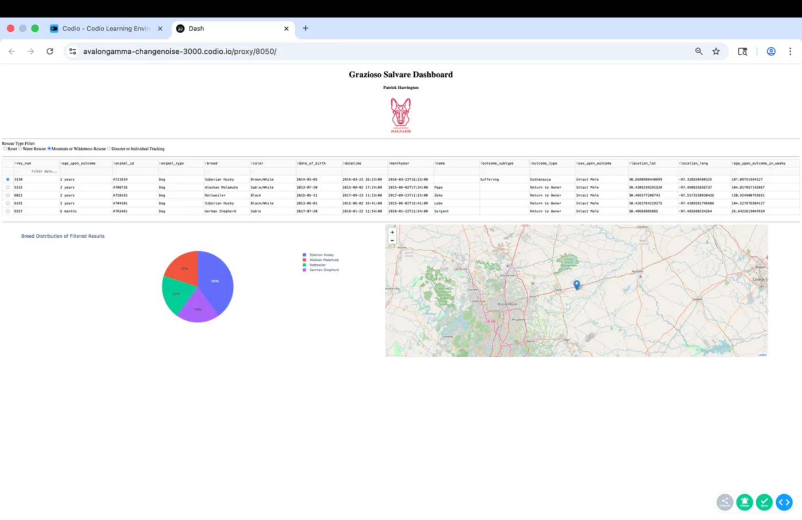

The original Grazioso Salvare dashboard was refactored from a functional notebook prototype into a modular Python application with stronger security, validation, reliability, documentation, and testability.
The Grazioso Salvare animal-shelter dashboard was created in April 2026 for CS-340 Client/Server Development. It uses Python, MongoDB, Dash, Plotly, Pandas, and Dash Leaflet to help rescue personnel review shelter records. Users can filter animals by rescue category, inspect an interactive table, view breed distributions, and locate a selected animal on a map.
A separate AnimalShelter class supplies create, read, update, and delete operations for the MongoDB animals collection. The original project successfully demonstrated client/server integration and data visualization, but it placed most dashboard responsibilities in one notebook and included hardcoded credentials and limited defensive programming.
Original Dashboard

Default dashboard view with unfiltered shelter data.

Water-rescue filtering updates the table, visualization, and map.

Mountain and wilderness rescue results shown dynamically.
Enhancement Summary
Modular Architecture
Responsibilities were separated into focused modules for configuration, logging, rescue filters, data access, and the Dash application. A create_app function accepts an AnimalShelter repository, improving dependency management and testability.
Secure Configuration
Hardcoded credentials were removed. An immutable MongoSettings data class reads environment variables, validates required values, checks the port range, and safely encodes credential values for the connection URI.
Defensive Programming
CRUD inputs are validated, empty update and delete queries are rejected, read limits are checked, and callbacks handle empty data, invalid selections, missing columns, and unavailable coordinates.
Exception Handling & Logging
Broad exception handling and print statements were replaced with targeted PyMongo handling, an application-specific exception, centralized logging, and stable user-facing behavior during data-loading failures.
Documentation & Testing
Modules now include docstrings, parameter descriptions, return types, modern type hints, a setup README, dependency documentation, and unit tests for rescue-filter behavior and defensive copies.
User-Facing Reliability
Filter changes reset row selection safely, the interface reports loaded record counts, and visual components handle missing or invalid state predictably.
Narrative and Reflection
Skills Demonstrated
The enhancement demonstrates modular software architecture, separation of concerns, dependency injection, secure configuration management, structured logging, targeted exception handling, input validation, automated testing, technical documentation, and attention to accessibility and reliable user feedback.
Course Outcome Alignment
The strongest alignment is with Outcome Four through the application of professional software-engineering techniques and tools, and Outcome Five through credential protection, configuration validation, safer database operations, and controlled error exposure. The artifact also supports Outcome Two through written documentation and visual communication, Outcome One through stakeholder-focused decision support, and Outcome Three through design trade-offs such as mapping-based filters and defensive copies.
Learning and Challenges
The enhancement showed that improving software quality often requires changing relationships among components rather than adding visible features. Preserving dashboard behavior while separating configuration, data access, filtering, callbacks, and startup logic required careful attention to interfaces and responsibilities. Error handling also required distinguishing between a legitimate empty result and a database failure so that each application layer could respond appropriately.
Credential security required more than deleting a password from the notebook. The revised application validates settings, rejects invalid ports, encodes credential values, provides a placeholder-only environment example, and documents secure setup. The resulting artifact demonstrates how modularity, validation, logging, testing, documentation, and predictable feedback work together to make software maintainable and professionally presentable.
Artifact Downloads
Original Artifact
The CS-340 notebook, CRUD class, and project logo before enhancement.